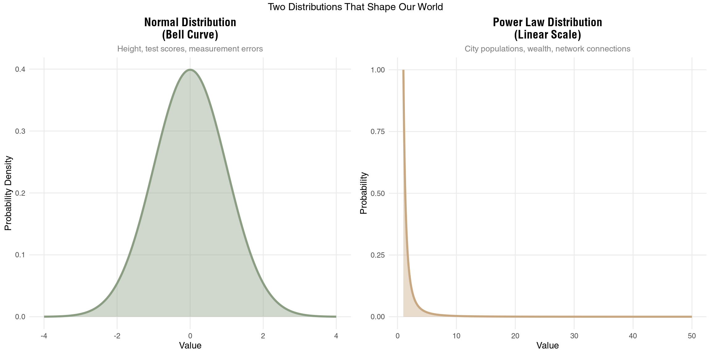
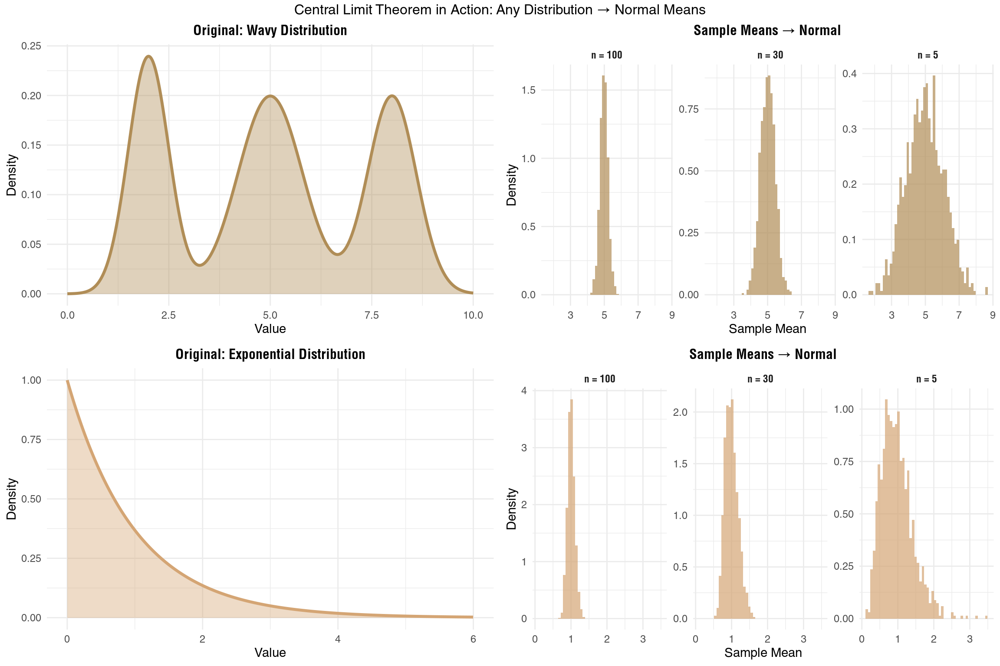

Distributions, From Power Law to Normal and Hierarchy
Two Distributions That Shape Our World
If you have ever done any kind of data analysis I’m sure you have either looked at your data in histogram format or at least plotted them into a graph with the hope of seeing something familiar. You were either looking for a trend or a homogeneity. Apparently There are two main kind of distributions you will see regardless of the subject or discipline. it is normal distribution (aka. Gaussian distribution/Bell curve) or power laws.
library(ggplot2)
library(gridExtra)
library(scales)
# Create data for normal distribution
x_normal = seq(-4, 4, length.out = 1000)
y_normal = dnorm(x_normal, mean = 0, sd = 1)
normal_data = data.frame(x = x_normal, y = y_normal, type = "Normal Distribution")
# Create data for power law distribution (linear scale)
x_power = seq(1, 50, length.out = 1000)
alpha = 2.5
y_power = x_power^(-alpha)
power_data = data.frame(x = x_power, y = y_power, type = "Power Law Distribution")
# Plot normal distribution
p1 = ggplot(normal_data, aes(x = x, y = y)) +
geom_line(color = "#8B9D83", size = 1.2) +
geom_area(fill = "#8B9D83", alpha = 0.4) +
labs(title = "Normal Distribution\n(Bell Curve)",
subtitle = "Height, test scores, measurement errors",
x = "Value", y = "Probability Density") +
theme_minimal() +
theme(
plot.title = element_text(size = 14, face = "bold", hjust = 0.5),
plot.subtitle = element_text(size = 10, hjust = 0.5, color = "gray50"),
panel.grid.minor = element_blank()
)
# Plot power law distribution (linear scale)
p2 = ggplot(power_data, aes(x = x, y = y)) +
geom_line(color = "#C8A882", size = 1.2) +
geom_area(fill = "#C8A882", alpha = 0.4) +
labs(title = "Power Law Distribution\n(Linear Scale)",
subtitle = "City populations, wealth, network connections",
x = "Value", y = "Probability") +
theme_minimal() +
theme(
plot.title = element_text(size = 14, face = "bold", hjust = 0.5),
plot.subtitle = element_text(size = 10, hjust = 0.5, color = "gray50"),
panel.grid.minor = element_blank()
)
# Combine plots
grid.arrange(p1, p2, ncol = 2, top = "Two Distributions That Shape Our World")
Measure a thousand people’s heights and plot the data. You’ll see most people cluster around average height with fewer and fewer as you move toward very short or very tall. This is the normal distribution - that familiar bell curve.
Now plot city populations instead. Something weird happens. You don’t get a bell curve at all. Instead, you find a few massive cities and tons of small towns, with the biggest cities being absurdly larger than average. Welcome to the power law distribution.
These aren’t just mathematical curiosities. They’re signatures of completely different processes at work in nature.
How Normal Distributions Emerge
Normal distributions pop up when lots of small, independent factors add together. Take height. Your final height comes from adding up genetic contributions (maybe +2 inches from dad’s side, +1 from mom’s), nutritional effects (+0.5 inches from good childhood diet), health impacts (-0.3 from that childhood illness), and dozens of other small factors. The key? They add.
The math is straightforward: when you sum many independent random variables, you get a normal distribution. Each factor contributes its bit, none dominates, and the result clusters around an average. About 68% of values fall within one standard deviation of the mean. Move out to two standard deviations and you’ve captured 95%. By three standard deviations, you’re at 99.7%. Extreme values become vanishingly rare.
This additive process shows up everywhere. Measurement errors? Normal. Test scores on well-designed exams? Normal. Daily temperature variations? Also normal. When things add up independently, the bell curve emerges.
The Wild World of Power Laws
Power laws tell a completely different story. Here, the probability of observing a value \(x\) follows \(P(x) \propto x^{-\alpha}\) where \(\alpha\) is the scaling exponent. In plain English: a few observations are enormous while most are tiny.
Income shows this pattern brutally. It’s not additive - it’s multiplicative. If you have $1,000 and earn 5% returns, you make $50. But someone with $1,000,000 earning the same 5% makes $50,000. The rich literally get richer by larger absolute amounts. Success breeds more success proportionally, not additively.
This same mechanism drives city growth. Big cities attract businesses because they’re big. Those businesses attract workers. Those workers attract more businesses. It’s a feedback loop where current size determines growth rate. The result? A few megacities and countless small towns, with no “typical” city size.
Power laws have no characteristic scale. There’s no “average” that means anything. Whether you look at cities from 10,000 to 100,000 people or from 100,000 to 1,000,000, the pattern looks the same - a few big ones, many small ones. This scale-free property defines power laws and makes them fundamentally different from normal distributions.
Enter the Central Limit Theorem
The CLT is genuinely remarkable. Take any distribution - uniform, exponential, even highly skewed - and start sampling from it. Calculate the mean of each sample. Plot those means.
What emerges is almost magical: a normal distribution, regardless of what you started with.
More formally, if we have independent random variables \(X_1, X_2, ..., X_n\) from a distribution with mean \(\mu\) and variance \(\sigma^2\), then the sample mean:
\[\bar{X} = \frac{1}{n}\sum_{i=1}^{n}X_i\]
approaches a normal distribution with mean \(\mu\) and variance \(\sigma^2/n\) as \(n\) increases. Even more precisely, the standardized version:
\[Z = \frac{\bar{X} - \mu}{\sigma/\sqrt{n}} = \frac{\sqrt{n}(\bar{X} - \mu)}{\sigma}\]
converges to a standard normal distribution \(N(0,1)\).
The convergence rate matters too. The Berry-Esseen theorem tells us this convergence happens at rate \(O(1/\sqrt{n})\), meaning you don’t need huge samples for the approximation to be decent.
This seems to imply normal distributions should be everywhere when enough sampling and averaging. After all, we’re constantly observing averages and aggregates. So why do power laws persist?
library(ggplot2)
library(gridExtra)
# Set seed for reproducibility
set.seed(42)
# Function to create samples and calculate means
create_clt_data = function(original_dist, sample_sizes, n_samples = 1000) {
results = list()
for (i in seq_along(sample_sizes)) {
n = sample_sizes[i]
sample_means = replicate(n_samples, {
if (original_dist == "wavy") {
# Create a wavy/multimodal distribution
mixture = sample(1:3, n, replace = TRUE, prob = c(0.3, 0.4, 0.3))
values = numeric(n)
values[mixture == 1] = rnorm(sum(mixture == 1), mean = 2, sd = 0.5)
values[mixture == 2] = rnorm(sum(mixture == 2), mean = 5, sd = 0.8)
values[mixture == 3] = rnorm(sum(mixture == 3), mean = 8, sd = 0.6)
mean(values)
} else if (original_dist == "exponential") {
mean(rexp(n, rate = 1))
} else if (original_dist == "powerlaw") {
# Approximate power law using Pareto distribution
shape = 2.5
mean((1/runif(n))^(1/shape))
}
})
results[[i]] = data.frame(
means = sample_means,
sample_size = paste("n =", n),
dist = original_dist
)
}
do.call(rbind, results)
}
# Create original distributions for display
x_orig = seq(0, 10, length.out = 1000)
# Original wavy/multimodal distribution
wavy_orig = data.frame(
x = x_orig,
y = 0.3 * dnorm(x_orig, 2, 0.5) + 0.4 * dnorm(x_orig, 5, 0.8) + 0.3 * dnorm(x_orig, 8, 0.6),
type = "Original: Wavy (Trimodal)"
)
# Original exponential distribution
exp_orig = data.frame(
x = x_orig,
y = dexp(x_orig, rate = 1),
type = "Original: Exponential"
)
# Sample sizes to demonstrate CLT
sample_sizes = c(5, 30, 100)
# Generate CLT data
wavy_clt = create_clt_data("wavy", sample_sizes)
exp_clt = create_clt_data("exponential", sample_sizes)
# Plot original wavy distribution
p_wavy_orig = ggplot(wavy_orig, aes(x = x, y = y)) +
geom_line(color = "#B08D57", size = 1.2) +
geom_area(fill = "#B08D57", alpha = 0.4) +
labs(title = "Original: Wavy Distribution", x = "Value", y = "Density") +
theme_minimal() +
theme(plot.title = element_text(size = 12, face = "bold", hjust = 0.5))
# Plot CLT for wavy
p_wavy_clt = ggplot(wavy_clt, aes(x = means)) +
geom_histogram(aes(y = ..density..), bins = 50, fill = "#B08D57", alpha = 0.7) +
facet_wrap(~sample_size, scales = "free_y") +
labs(title = "Sample Means → Normal",
x = "Sample Mean", y = "Density") +
theme_minimal() +
theme(
plot.title = element_text(size = 12, face = "bold", hjust = 0.5),
strip.text = element_text(face = "bold")
)
# Plot original exponential distribution
p_exp_orig = ggplot(exp_orig, aes(x = x, y = y)) +
geom_line(color = "#D4A574", size = 1.2) +
geom_area(fill = "#D4A574", alpha = 0.4) +
xlim(0, 6) +
labs(title = "Original: Exponential Distribution", x = "Value", y = "Density") +
theme_minimal() +
theme(plot.title = element_text(size = 12, face = "bold", hjust = 0.5))
# Plot CLT for exponential
p_exp_clt = ggplot(exp_clt, aes(x = means)) +
geom_histogram(aes(y = ..density..), bins = 50, fill = "#D4A574", alpha = 0.7) +
facet_wrap(~sample_size, scales = "free_y") +
labs(title = "Sample Means → Normal",
x = "Sample Mean", y = "Density") +
theme_minimal() +
theme(
plot.title = element_text(size = 12, face = "bold", hjust = 0.5),
strip.text = element_text(face = "bold")
)
# Arrange all plots
grid.arrange(
p_wavy_orig, p_wavy_clt,
p_exp_orig, p_exp_clt,
ncol = 2, nrow = 2,
top = "Central Limit Theorem in Action: Any Distribution → Normal Means"
)
Why Power Laws Refuse to Die
Here’s the thing: CLT doesn’t magically transform your data. If wealth follows a power law, collecting more wealth data doesn’t make individual wealth normal. It only makes the average wealth of random groups normal. The underlying distribution stays power law.
Plus, CLT needs specific conditions. Independence is crucial - but people don’t make decisions independently. They influence each other, creating correlations the CLT can’t handle. The variance needs to be finite too. Some power laws have infinite variance (when \(\alpha \leq 2\)), and then classical CLT doesn’t even apply.
But the real power law persistence comes from different mechanisms entirely. When growth is multiplicative rather than additive, when success breeds success, when networks effects dominate - these create and maintain power laws regardless of how much data you collect (Barabási and Albert 1999).
The Hierarchy Hypothesis
Here’s where things get weird. What if those “normal” distributions we see aren’t fundamental at all? if everything converges to nomal and we still see power law and other distributions, can it still be fundamental?
Consider height again. We say it’s normal because genetic and environmental factors add up. But zoom into the molecular level. Gene expression levels? Power law. Protein concentrations? Power law. Metabolic networks? Power law scaling.
So what’s really happening? Maybe each “genetic factor” we talk about is actually the average of thousands of genes, each following power law expression patterns. The CLT averages these into apparently normal contributions. Height appears normal not because the underlying processes are normal, but because we’re seeing CLT effects smoothing over deeper power law dynamics.
This view flips everything. Normal distributions become emergent properties, not fundamental ones. They arise when we observe systems at scales where averaging has already occurred (Anderson 1972).
When Power Laws Become Normal
The hierarchy hypothesis suggests something counterintuitive: those normal distributions we observe might actually be power laws in disguise, averaged out by CLT effects as we move up hierarchical levels.
Take gene expression and human traits. Individual genes show power law expression patterns - most genes barely expressed, a few highly active. Same for protein concentrations and metabolic fluxes. Yet when these thousands of power law processes combine to produce a trait like height or intelligence, we see a normal distribution. The CLT has averaged the underlying power laws into normality.
This happens constantly in biological systems. Individual neurons fire with power law intervals, but averaged brain activity looks normal. Individual molecular collisions follow power laws, but temperature (average kinetic energy) is normally distributed. The higher up the hierarchy you look, the more CLT smooths things out.
Economic data shows this too. Individual purchase amounts follow power laws - lots of small purchases, few large ones. But monthly spending totals? Much closer to normal. Individual stock trades show power law volumes, but daily market indices approximate normality.
But Sometimes Power Laws Persist
Yet confusingly, some systems maintain power laws even at high hierarchical levels. City sizes aggregate millions of individual decisions but stay power law. Company revenues sum thousands of transactions but remain power law. Scientific citations compile many individual choices but show power law patterns.
Why don’t these average out to normality?
The key is that CLT requires independence and additive aggregation. When these break down, power laws can persist or even emerge at higher scales. Cities don’t grow by adding random increments - they grow multiplicatively, with current size affecting growth rate. Companies don’t just add revenue - success compounds, creating feedback loops. Citations aren’t independent - popular papers get cited because they’re already highly cited.
When components interact, when growth is multiplicative, when preferential attachment operates - these mechanisms can overpower CLT effects even at high aggregation levels (Barabási and Albert 1999).
Developing Distribution Intuition
So how can we predict what distribution to expect? A few heuristics help:
First, ask about independence. If components interact strongly, if decisions influence each other, if feedback loops exist - expect power laws to persist. Social systems, networks, and economic systems often fall here.
Second, check the aggregation mechanism. Addition favors normality. Multiplication favors power laws. Most physical measurements add (temperature, pressure, height) while many economic quantities multiply (wealth, company growth, network connections).
Third, look for bounds and constraints. Hard limits push toward normality by preventing extreme values. Human height can’t be negative or infinite. Test scores have maximum values. But wealth, city size, and network connections have no natural upper bounds.
Fourth, consider selection effects. Even if components are normal, selecting extremes can create power laws. The tallest person from each country might follow a power law even though height is normal. Surviving companies might show power law sizes even if all startups begin normally distributed.
Time scales matter too. Fast processes often show more extreme distributions than their long-term averages. Millisecond stock trades show wild power law swings that average to near-normal daily returns.
Implications for Data Science
This multi-scale view changes how we should approach data analysis. That innocent-looking normal distribution might hide power law components that could explode under the right conditions. That power law might be amenable to interventions that trigger CLT effects.
For prediction, we need to know which level we’re operating at. Predicting average behavior? CLT might help even with power law components. Predicting extremes? Better understand the underlying power law dynamics. The 2008 financial crisis partly stemmed from models assuming normality in averaged mortgage portfolios, missing the power law default correlations underneath (Taleb 2007).
For causal inference, distribution shape hints at mechanism. Normal distributions suggest independent, additive causes we might manipulate separately. Power laws suggest interconnected, multiplicative processes where interventions might cascade unpredictably.
For sampling and experimentation, distributions determine strategy. Normal distributions let us confidently estimate means with modest samples. Power laws require massive samples to capture rare but important extremes, or clever sampling strategies that oversample the tail.
Most importantly, always ask “what scale am I looking at?” The same phenomenon can show different distributions at different scales of time, space, or aggregation. Stock returns, city growth, even human behavior - all shift between normal and power law depending on your measurement window.
The Beauty of Complexity
The interplay between normal and power law distributions reveals something deep about complexity itself. At every scale, averaging forces push toward homogeneity while multiplicative processes create heterogeneity. The patterns we see - normal, power law, or something else - reflect temporary balances between these competing forces.
Change your scale of observation and entirely different patterns emerge. What looks random at one level reveals structure at another. What seems unequal at one scale averages out at the next.
Both the bell curve’s elegant symmetry and the power law’s wild inequality are windows into the same reality - a hierarchical universe where patterns emerge, dissolve, and re-emerge as we shift perspective across scales. The complexity we observe might not come from any single principle -not only hierarchy-, but from the endless tension between forces that concentrate and forces that disperse, between processes that amplify and processes that average away.
In the end, asking whether the world is “really” normal or power law is like asking whether light is “really” a wave or particle. The answer depends on how you look and what your reliaty is.